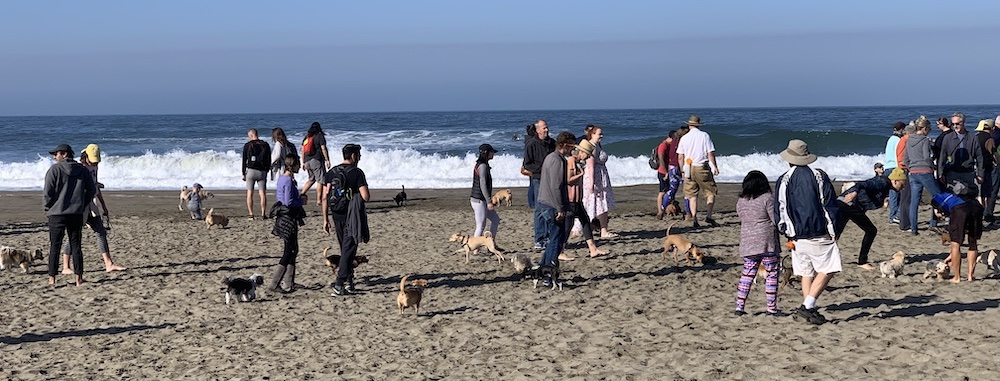

For a moment, the concentration of tiny dogs seemed like an adorable coincidence. As we looked ahead down the beach, we realized the number of dogs at calf height or shorter couldn’t have happened unplanned. The effect was like having your eyes adjust to a dark room after time in the sunlight. One minute you couldn’t see the obvious, the next, every tiny tail and precious paw was in focus. Dozens of small dogs pranced and bounced and sniffed along the slope between the surf and the high water mark. Their attendant humans ambled among them like Ents at a Hobbit festival. The pack slowly moved north.
